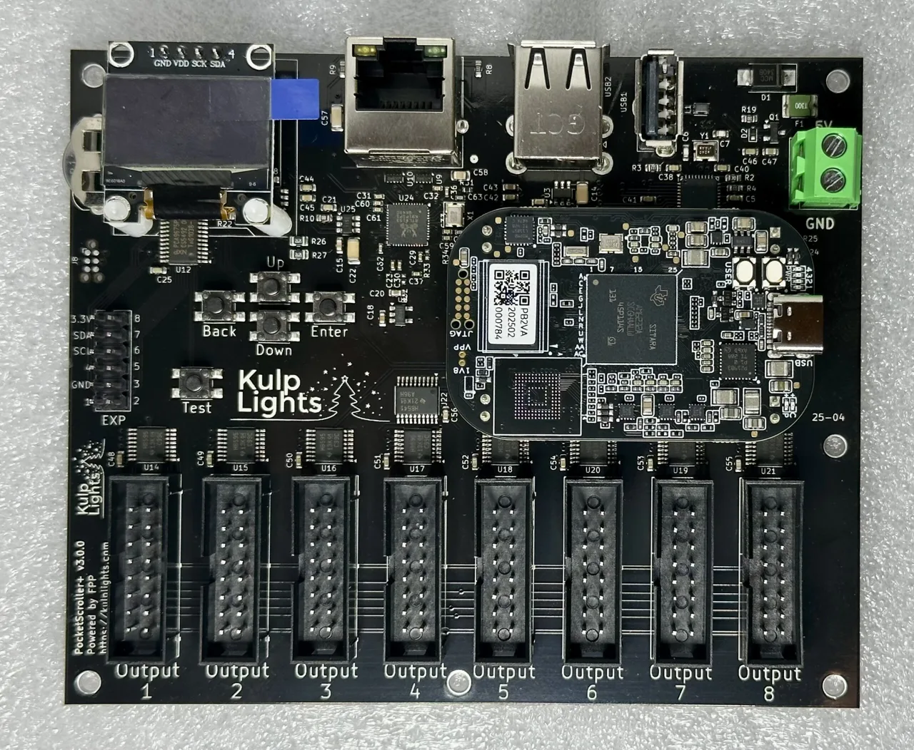
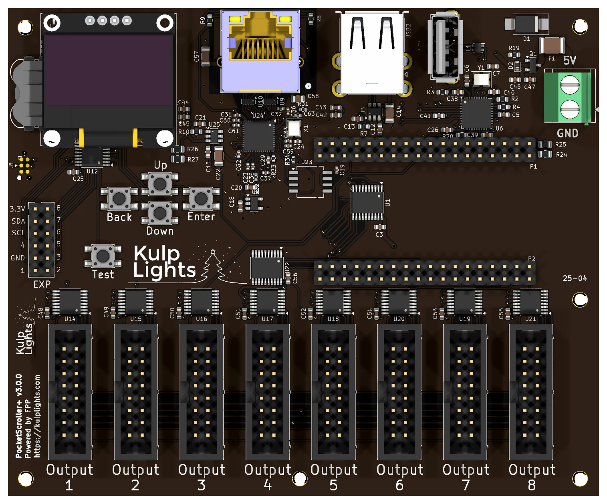

PocketScroller v3¶
Eight HUB75 outputs for driving LED panel matrices from a PocketBeagle 2.

PocketScroller v3 with a PocketBeagle 2 fitted.
This page covers board revision v3.0.0. The board is sold as the PocketScroller v3, but printed
on it as PocketScroller+ v3.0.0.
FPP calls it PocketScroller.
Specifications¶
| PocketScroller v3 | |
|---|---|
| Panel outputs | 8 × HUB75 (2×8 shrouded header), with E line for 1/32-scan panels |
| Capacity | about 80 64×32 panels at 12-bit colour and 60 Hz (10 per output); see Capacity |
| Signal level | 5 V |
| Power input | 5 V DC only, 2-pin 5.08 mm screw terminal |
| Input protection | 3 A resettable fuse, over-voltage clamp, reverse-polarity protection |
| Panel power | not supplied. Panels need their own 5 V supply. |
| Ethernet | 1 × Gigabit (USB-attached) |
| USB-A | 3 |
| Display & buttons | 128×64 OLED, Up / Down / Enter / Back / Test |
| Real-time clock | yes, CR1220 backup cell |
| Expansion header | 2×6: I²C + 8 GPIO (Exp.1–Exp.8) |
| Audio, DMX, pixel ports | none |
| Size | 121.95 × 100.70 mm (4.80 × 3.96 in), 6 mounting holes, 3.0 mm |
| Requires | PocketBeagle 2 (not PocketBeagle 1), FPP 9.0 or later |
Board map¶

Power¶
5 V only
The PocketScroller v3 has no voltage regulator. Connect a regulated 5 V supply to the terminal marked 5V / GND (top-right corner). A 12 V or 24 V supply makes the protection clamp conduct and trip the resettable fuse, and can damage the board.
- The terminal powers the PocketBeagle 2, the panel drivers, Ethernet and the USB ports. The board draws very little, but use a 5 V supply rated 5 A or more: it handles ripple and spikes better.
- The panels are not powered through the PocketScroller. Run each panel's power from your 5 V panel supply. You can feed the PocketScroller from the same supply.
- There are no power LEDs. When the board is running, the OLED shows status.
- FPP shows the input voltage as VIN.
Panel outputs¶
The eight outputs run along the bottom edge, marked Output 1 to Output 8 from left to right. Each is a standard HUB75 connector:
| Pin | Signal | Pin | Signal |
|---|---|---|---|
| 1 | R1 | 2 | G1 |
| 3 | B1 | 4 | GND |
| 5 | R2 | 6 | G2 |
| 7 | B2 | 8 | E |
| 9 | A | 10 | B |
| 11 | C | 12 | D |
| 13 | CLK | 14 | LAT |
| 15 | OE | 16 | GND |
- Use the ribbon cables that come with your panels. The red stripe goes to pin 1 (marked on the header's shroud).
- Chain panels from each output's input connector to the next panel's input, following the arrows on the panels.
- Spread the panels evenly across all eight outputs. The refresh rate depends on the longest chain (see Capacity & refresh rate).
Other connectors¶
| Connector | Marking | Details |
|---|---|---|
| Ethernet | (RJ45 with LEDs) | Network |
| USB-A | — | 3 ports, USB |
| OLED | GND 3.3V SCL SDA |
Controls & display |
| Expansion | EXP |
Expansion header (PocketScroller pinout) |
| RTC battery | coin-cell holder, top-left | Clock |
Capacity & refresh rate¶
How many panels you can run depends on how long each chain is and on the colour depth. The table gives the full-frame refresh rate in Hz for 64×32 panels at FPP's default brightness (10). Bold values are 60 Hz or more. Italic values are under 60 Hz, where flicker starts to show on camera and to some viewers.
| Panels per output | Total panels | 12-bit | 10-bit | 8-bit | PWM panels (fps) |
|---|---|---|---|---|---|
| 1 | 8 | 192 | 200 | 210 | 545 |
| 2 | 16 | 166 | 179 | 194 | 272 |
| 3 | 24 | 143 | 157 | 174 | 182 |
| 4 | 32 | 128 | 143 | 162 | 136 |
| 5 | 40 | 110 | 124 | 143 | 109 |
| 6 | 48 | 96 | 108 | 126 | 91 |
| 8 | 64 | 75 | 86 | 100 | 68 |
| 10 | 80 | 60 | 69 | 81 | 54 |
| 12 | 96 | 54 | 62 | 73 | 45 |
| 16 | 128 | 45 | 53 | 64 | 34 |
- Rule of thumb at 60 Hz: up to 10 panels per output at 12-bit colour (80 panels), or 16 per output at 8-bit (128 panels).
- Refresh depends only on the longest chain. Every output is clocked whether or not a panel is attached, so using fewer outputs doesn't make it faster. Spread the panels evenly across all 8 outputs.
- 1/8-scan outdoor panels refresh within a few percent of these 1/16-scan figures. Panels with shift-register row drivers ("ABC-shift" addressing, found on some outdoor 1/8 panels) are 7–16 % slower.
- Lowering colour depth is the easiest way to win back refresh on long chains. Lowering the brightness setting raises refresh slightly (about 9 % at brightness 8).
- The brightest bit plane is split into up to four pulses per frame, so the flicker a viewer actually sees runs 2–4× faster than the full-frame figure.
Estimated figures
These numbers come from FPP's refresh estimator for the 8-output firmware. On the PocketScroller-16 the same estimator matched hardware measurements to within 0.5 %, but the 8-output timing hasn't been measured on a board yet.
PWM panels¶
Panels with PWM driver chips (FM6363C, FM6353, FM6373) run their own 16-bit greyscale, so they don't flicker as chains get longer. Chain length limits only how many new frames per second reach the panels: the last column of the table. Bold values there meet a 40 fps sequence, which works out to up to 12 panels per output (96 panels). Select the panel's driver chip under Panel Type in FPP's LED Panels settings.
FPP setup¶
When FPP detects the PocketScroller it sets up an LED Panels output (Input/Output Setup → Channel Outputs → LED Panels) with the PocketScroller v3 wiring. The starting layout is a 2×2 block of 64×32 panels at low brightness. Change it to match your panels:
- Set the panel size and scan (e.g. 64×32 1/16, 64×64 1/32).
- Set the layout: how many panels wide and high.
- In the grid, assign each panel to an output and a position in the chain, and set its orientation.
- Set colour depth and brightness, then save. FPP restarts the output.
See LED panel matrices in the FPP manual for every field.